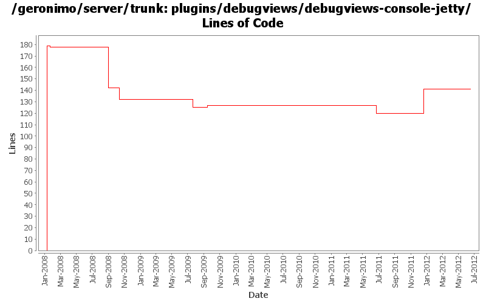

[root]/plugins/debugviews/debugviews-console-jetty
 src
(0 files, 0 lines)
src
(0 files, 0 lines)
 main
(0 files, 0 lines)
main
(0 files, 0 lines)
 history
(1 files, 19 lines)
history
(1 files, 19 lines)
 plan
(1 files, 80 lines)
plan
(1 files, 80 lines)

| Author | Changes | Lines of Code | Lines per Change |
|---|---|---|---|
| Totals | 19 (100.0%) | 236 (100.0%) | 12.4 |
| djencks | 9 (47.4%) | 220 (93.2%) | 24.4 |
| jdillon | 4 (21.1%) | 8 (3.4%) | 2.0 |
| rwonly | 1 (5.3%) | 3 (1.3%) | 3.0 |
| linsun | 1 (5.3%) | 2 (0.8%) | 2.0 |
| xuhaihong | 1 (5.3%) | 1 (0.4%) | 1.0 |
| xiaming | 1 (5.3%) | 1 (0.4%) | 1.0 |
| kevan | 1 (5.3%) | 1 (0.4%) | 1.0 |
| genspring | 1 (5.3%) | 0 (0.0%) | 0.0 |
Update trunk version to 4.0.0-SNAPSHOT
1 lines of code changed in 1 file:
GERONIMO-6240 Make several base geronimo functions (kernel, deployer, etc) DS services and make the car-maven-plugin take advantage of that. Server assembly doesn't work yet, builds framework.
26 lines of code changed in 1 file:
GERONIMO-5674 Dojo related improvement. Patch from Xiao Yi to replace the full dojo with a customized dojo.
1, DojoHowToCompress/**/* files are the build script to build geronimo customized dojo.
2, dojo/**/* files are the customized dojo files for geronimo.
3, dojo-tomcat and dojo-jetty modules are removed.
4, customized dojo files are put into console-portal-driver webapp so that other jsp can reference the dojo
files with /console/dojo/xxx
5, also updated all dojo references in all jsps to the new dojo location.
0 lines of code changed in 1 file:
GERONIMO-5290 fix many of the deprecation warnings from maven 3
9 lines of code changed in 1 file:
GERONIMO-4790 Migrate debug-views code to base on the up-to-date dojo: Sub-task 1
3 lines of code changed in 1 file:
GERONIMO-4655 upgrade version to 3.0-SNAPSHOT, make a few things more consistent
1 lines of code changed in 1 file:
GERONIMO-4737 Move resources that need filtering into filtered-resources directories. Mostly patch from shawn jiang, thanks
0 lines of code changed in 1 file:
GERONIMO-4697 Update those folders contained jetty6 to jetty
1 lines of code changed in 1 file:
GERONIMO-4249 Make it easier to switch between jetty6 and jetty7
2 lines of code changed in 1 file:
update the name, description of debugviews slightly
2 lines of code changed in 1 file:
GERONIMO-4239, sort of. Use transitive depenedencies in c-m-p everywhere. This may break stuff.... let me know
3 lines of code changed in 1 file:
Drop *most* per-module legal muck, a few modules have additions to the standard... so left them in place for resolution later
0 lines of code changed in 2 files:
upgrade trunk to 2.2-SNAPSHOT
1 lines of code changed in 1 file:
(GERONIMO-3747) Fixed parentage of module groups, though most still need to have their modules put into the proper groupId
Updated groupId of *everything* under framework/** to org.apache.geronimo.framework, and did my best to update all references
7 lines of code changed in 1 file:
(GERONIMO-3771) Moved maven-plugins/* to buildsupport/*, updated groupId to org.apache.geronimo.buildsupport
1 lines of code changed in 1 file:
GERONIMO-3743 Better naming convention for console plugins: *-console-jetty/tomcat
179 lines of code changed in 3 files: